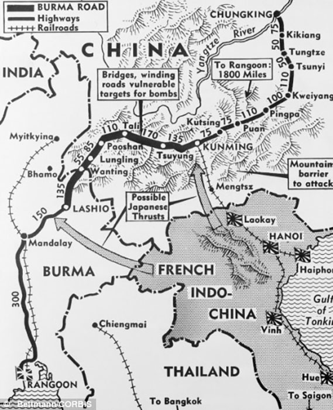

Home | Insignia | P40 | Jacket | Chit | Burma Road

As the Japanese Army swept across China and South Asia at the beginning of World War II, closing all of China's seaports, more than 200,000 Chinese and Burmese laborers embarked on a seemingly impossible task: to cut a 717-mile overland route – the Burma Road – from the southwest Chinese city of Kunming to Lashio, Burma. It was built (started in 1937 and finished in 1938) while Burma was a British colony in order to convey supplies to China.
F.S. drove supplies over this treacherous road. Whenever another truck comes towards him, he would park his truck on the mountain side and let the other truck pass. This implies (to me) that certain sections were not wide enough for two lanes
P.S.: F.S. was drafted, even though he was not allowed to become a U.S. citizen. After basic training in Florida, he was transported on a ship with destination unknown. Eventually he reached India's east coast. Once a week, he wrote to "his" congressman, advocating that he should be allowed to become a U.S. citizen since he was in the U.S. Armed Force fighting for the United States. His company commander must read all mail that was being sent anywhere and he noticed that F.S. had a flair for writing and asked him if he wanted to be the company's historian. He inquired about the duties of a historian and accepted the position. His company histories are in the archives of the Library of Congress.
Read more at http://www.dangerousroads.org/asia/china/321-burma-road-china.html